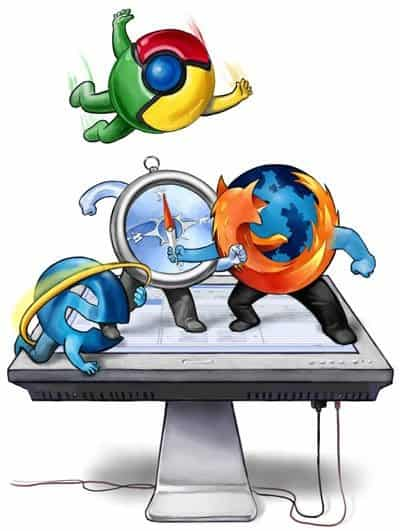

Tori's Blog
Hi everyone!
Hi, and welcome to my blog! I’m an interactive media student
at WITS University. Here I’m going to be blogging about all
the interesting and new things I learn well learning web design.
So, get ready to read up on some of my challenges, code trials
and interesting things I’m going to be learning. I hope you find
them as interesting as I do!
#1st Blog
Today i learned some spice internet history.
So, allow me to take you on a roller-coaster that is the browser wars.
In the 1990's the web was a mess and extremely hard to navigate.
But a group of students in the University of Illinois planned to change
that for everyone. They created Mosaic, the building blocks of the first
ever internet browser. Unfortunately, since they used the University of
Illinois resources to build Mosaic the university owned the whole project.
Therefore, the students once graduated, made a bran new company built off
the original ideas of Mosaic. However, they were not allowed to use any of
the old work that had done on Mosaic but rather start again from scratch in
order to make the Netscape browser. Mosaic was the practice run before the
real show started. So, like that the browser was born! It was easily accessible,
great to navigate and opened whole new world for the user. This was new and
profitable technology, and a big fish in the pond wanted a slice of the
action - Microsoft came out with Internet Explorer. This browser was not only new
competition for Netscape, was also built off the Mosaic original source code.
Since the University of Illinois owned the rights to Mosaic, Microsoft approached
them and bought the source code so they could try and compete against Netscape to
be the best browser. Internet explorer was built into Windows operating system,
allowing anyone with windows to by default have the Internet explorer
browser - taking Netscape down. In the end Microsoft ruined Netscape but Netscape
didn’t let them off that easily, releasing their source code to the world,
allowing for many more browsers to rise and compete against Internet Explorer.
One of which being google Chrome, that became the worlds top browser in 2015.

#2nd Blog
Semantics are the reson you can view this page!
So today we started learning about Semantic Mark ups, and what these basically are the
key words used in HTML code in order to divide parts of a webpage into visible sections.
For example, you have Headers, body, navs and many others. These basically allow the web
developer to organize their code and divide it into many sections and overall improving
their structure. The reason that semantic mark up is so important and must be used appropriately is that
when a webpage is being worked on by a group of designers, that everyone will understand
the structure and sectioning and the workflow will go a lot smoother.
So how this webpage works is that I have made use of semantic mark up in order to design this
page, this also allows for my sectioning and everything to make more sense so that if I need
to go back and change everything I will be able to fix certain aspects without influencing others.
#3rd Blog
URL's are like the little homes of the internt.
URL stands for Union Resource Locator. It is one of the most important components to the web as it allows you to be
able to use browsers to retrieve any resource published on to the web. A URL is basically a unique address given to
a type of resource on the web and can be used in order to find that exact resource.
For a URL to work properly for the associated webpage, it is composed of different parts. The main components being
the protocol, this is a method used by the browser to go through the data around a computer network.
The domain name indicates the web server being requested. Then the port, this is the gate that accesses the resource.
The path to the file, is the path taken by the sever to get to that resource. Parameters are values set up by the
server, the server can use them to do extra stuff before returning to the resource. Lastly there is the Anchor this
is a type of “bookmark” used by the webpage to tell the server where a certain type of recourse is located.
URL’s are like the home addresses for resources on the web. “the protocol represents the postal service you want to
use, the domain name is the city or town, and the port is like the zip code; the path represents the building where
your mail should be delivered; the parameters represent extra information such as the number of the apartment in the
building; and, finally, the anchor represents the actual person to whom you've addressed your mail.”
What is interesting is that as a web designer, working in HTML in a certain way allows you to make use of the structure
of your URL. This can influence how the viewers, will interact with your webpage. In terms of how they are able to find
the exact resource they are looking for and based on the components of your webpage they interact with allows people
to be able to explore all the information you offer.
#4th Blog
So how does a browser work?
When a web user interacts with a browser, they expect fast connection as well as smooth interaction so that using the
browser isn’t such a taxing task. As web developers we play a part in making the users interaction with webpages go
smoothly, this can be done by understanding the basic components that apply to the browser.
Number one is Navigation. This is the first step the user faces when assessing a browser. These things such as clicking
a link, entering a URL or looking up something. The goal as web designers is to make this Navigation step as short and
easy as possible. So that the user can find what resource they need in just a click, or maybe two.
Next is the response, once the server is connected, the browser will respond by sending an HTTP get request on behalf
of the user. Once the request is complete the server responds with the correct HTML page. This is the first byte of data
received by the browser and is known as Time to First Byte Data (TTFB). This is the time it takes from when the user made
the request by clicking a link and loading all the data on the page linked to it.
Last is Parsing after the browser receives it first incisal data it starts parsing. Parsing is when the browser turns the
data into DOM and CSSOM, that is then used by the renderer to load the page onto the screen for the user. The DOM is the
markup representation for the browser (going back to samantic markup). After this is done it moves to the CSSOM, this
accesses the styling aspects of the webpage that are going to be rendered for the viewer.
Understanding this allowed me to really understand how the webpage that I create is loaded by the browser. This is important
to know because as web designers we can make use of this information to help browsers load our data better making our webpages
assessable to the public and easy to interact with.